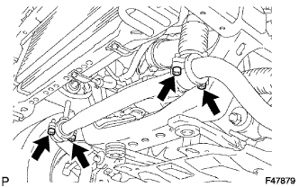

FRONT STABILIZER BAR > REMOVAL |
| 1. REMOVE FRONT WHEEL |
| 2. REMOVE SIDE STEP ASSEMBLY LH |
 |
Disconnect the connector and detach the clamp.
| *1 | Clamp |
Remove the 6 bolts.
 |
Put protective tape around the side step.
| *1 | Protective Tape |
Using a T30 "TORX" socket wrench, remove the 2 screws.
Remove the 3 screws.
Detach the 6 clips and remove the side step.
| 3. REMOVE STABILIZER CONTROL VALVE PROTECTOR |
 |
Remove the 2 bolts and stabilizer control valve protector.
| 4. DRAIN SUSPENSION FLUID |
 |
Loosen the bleeder plug on the stabilizer control with accumulator housing assembly and drain suspension fluid.
Tighten the bleeder plug.
| 5. REMOVE LOWER FRONT BUMPER COVER |
Remove the clip, 5 bolts and lower front bumper cover.
| 6. REMOVE NO. 1 ENGINE UNDER COVER SUB-ASSEMBLY |
Remove the 4 bolts.
 |
Unhook the No. 1 engine under cover from the vehicle body as shown in the illustration.
| 7. REMOVE FRONT SUSPENSION MEMBER BRACE SUB-ASSEMBLY |
 |
Remove the 6 bolts and 2 member braces from the front frame assembly.
| 8. REMOVE FRONT STABILIZER END BRACKET |
 |
Remove the 4 bolts and 2 brackets from the lower arm.
| 9. REMOVE FRONT STABILIZER BAR |
|  |
Remove the 4 bolts, 2 front stabilizer lower brackets and front stabilizer bar.
Remove the 2 front stabilizer link bushes and front stabilizer lower bracket bushes from the stabilizer bar front.
| 10. REMOVE FRONT FENDER APRON SEAL LH |
 |
Remove the 7 clips and front apron seal LH.
| 11. REMOVE FRAME APRON SEAL BRACKET |
Remove the bolt and bracket.
| 12. DISCONNECT NO. 1 FRONT STABILIZER CONTROL TUBE ASSEMBLY |
Using a union nut wrench, disconnect the front stabilizer control tubes.
Remove the bolt.
| 13. REMOVE FRONT STABILIZER WITH TUBE CYLINDER ASSEMBLY |
 |
Remove the bolt, nut and front stabilizer with tube cylinder assembly.
Remove the 2 bleeder plug caps and bleeder plugs from the front stabilizer with tube cylinder assembly.
| 14. REMOVE FRONT STABILIZER LINK ASSEMBLY RH |
Remove the bolt, spacer and front stabilizer link assembly.